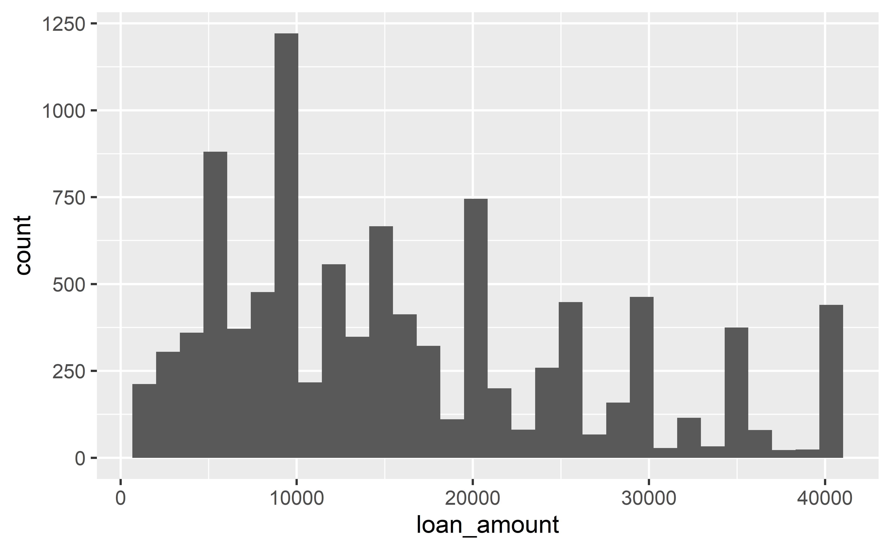
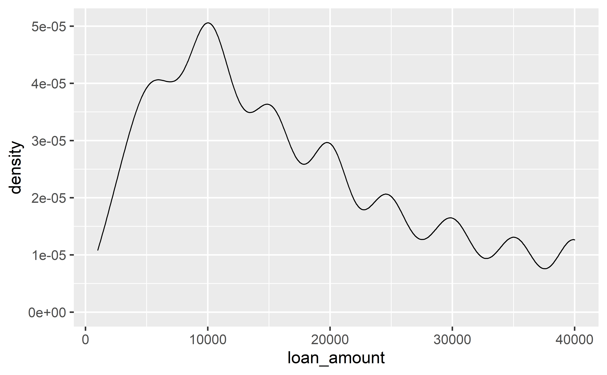
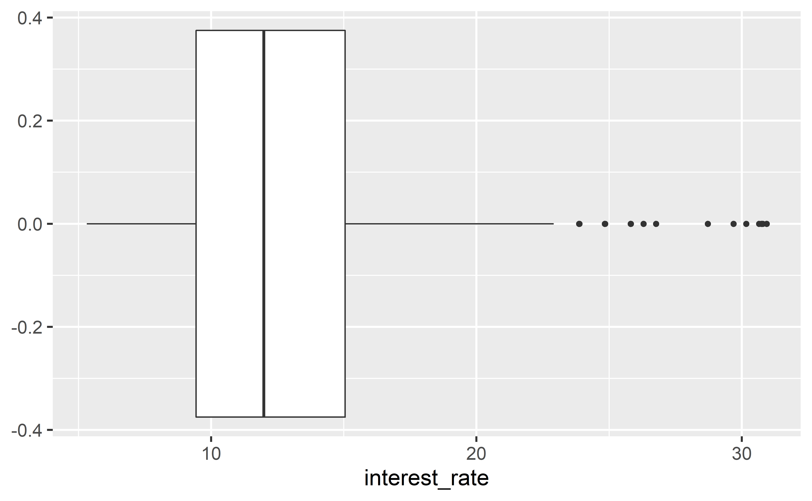
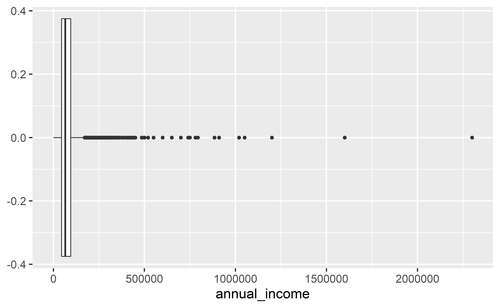
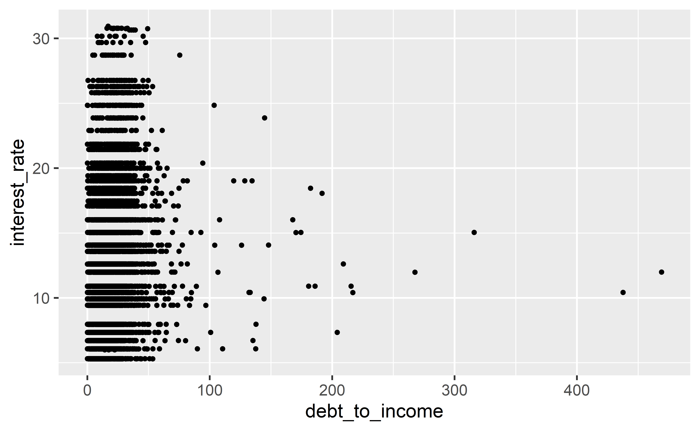
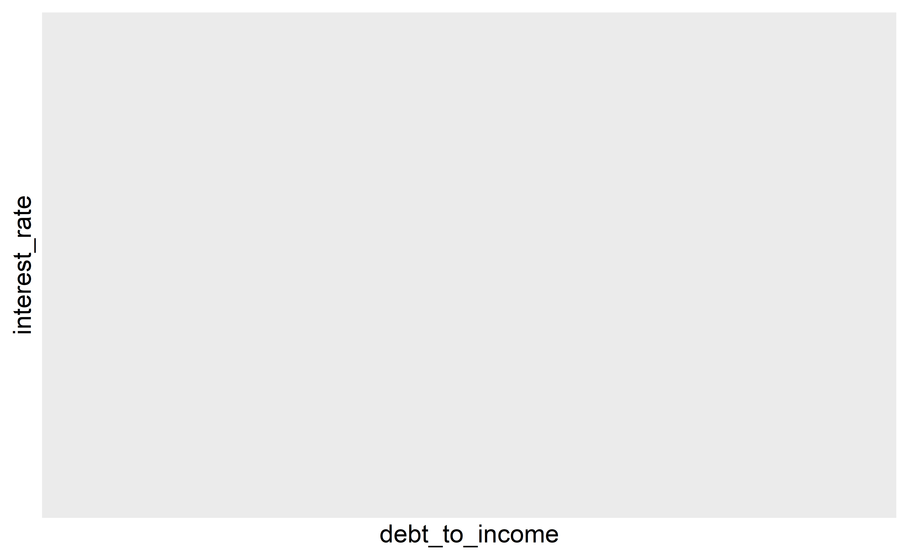

Visualising numerical data
Data Science in a Box
layout: true
class: middle
Terminology
Number of variables involved
- Univariate data analysis - distribution of single variable
- Bivariate data analysis - relationship between two variables
- Multivariate data analysis - relationship between many variables at once, usually focusing on the relationship between two while conditioning for others
Types of variables
- Numerical variables can be classified as continuous or discrete based on whether or not the variable can take on an infinite number of values or only non-negative whole numbers, respectively.
- If the variable is categorical, we can determine if it is ordinal based on whether or not the levels have a natural ordering.
class: middle
Data
Data: Lending Club
.pull-left-wide[] .pull-right-narrow[]
Take a peek at data
library(openintro)
glimpse(loans_full_schema)Rows: 10,000
Columns: 55
$ emp_title <chr> "global config enginee~
$ emp_length <dbl> 3, 10, 3, 1, 10, NA, 1~
$ state <fct> NJ, HI, WI, PA, CA, KY~
$ homeownership <fct> MORTGAGE, RENT, RENT, ~
$ annual_income <dbl> 90000, 40000, 40000, 3~
$ verified_income <fct> Verified, Not Verified~
$ debt_to_income <dbl> 18.01, 5.04, 21.15, 10~
$ annual_income_joint <dbl> NA, NA, NA, NA, 57000,~
$ verification_income_joint <fct> , , , , Verified, , No~
$ debt_to_income_joint <dbl> NA, NA, NA, NA, 37.66,~
$ delinq_2y <int> 0, 0, 0, 0, 0, 1, 0, 1~
$ months_since_last_delinq <int> 38, NA, 28, NA, NA, 3,~
$ earliest_credit_line <dbl> 2001, 1996, 2006, 2007~
$ inquiries_last_12m <int> 6, 1, 4, 0, 7, 6, 1, 1~
$ total_credit_lines <int> 28, 30, 31, 4, 22, 32,~
$ open_credit_lines <int> 10, 14, 10, 4, 16, 12,~
...Selected variables
loans <- loans_full_schema %>%
select(loan_amount, interest_rate, term, grade,
state, annual_income, homeownership, debt_to_income)
glimpse(loans)Rows: 10,000
Columns: 8
$ loan_amount <int> 28000, 5000, 2000, 21600, 23000, 5000, 2~
$ interest_rate <dbl> 14.07, 12.61, 17.09, 6.72, 14.07, 6.72, ~
$ term <dbl> 60, 36, 36, 36, 36, 36, 60, 60, 36, 36, ~
$ grade <ord> C, C, D, A, C, A, C, B, C, A, C, B, C, B~
$ state <fct> NJ, HI, WI, PA, CA, KY, MI, AZ, NV, IL, ~
$ annual_income <dbl> 90000, 40000, 40000, 30000, 35000, 34000~
$ homeownership <fct> MORTGAGE, RENT, RENT, RENT, RENT, OWN, M~
$ debt_to_income <dbl> 18.01, 5.04, 21.15, 10.16, 57.96, 6.46, ~Selected variables
.midi[ variable | description —————-|————- loan_amount | Amount of the loan received, in US dollars interest_rate | Interest rate on the loan, in an annual percentage term | The length of the loan, which is always set as a whole number of months grade | Loan grade, which takes a values A through G and represents the quality of the loan and its likelihood of being repaid state | US state where the borrower resides annual_income | Borrower’s annual income, including any second income, in US dollars homeownership | Indicates whether the person owns, owns but has a mortgage, or rents debt_to_income | Debt-to-income ratio]
Variable types
| variable | type |
|---|---|
loan_amount |
numerical, continuous |
interest_rate |
numerical, continuous |
term |
numerical, discrete |
grade |
categorical, ordinal |
state |
categorical, not ordinal |
annual_income |
numerical, continuous |
homeownership |
categorical, not ordinal |
debt_to_income |
numerical, continuous |
class: middle
Visualizing numerical data
Describing shapes of numerical distributions
- shape:
- skewness: right-skewed, left-skewed, symmetric (skew is to the side of the longer tail)
- modality: unimodal, bimodal, multimodal, uniform
- center: mean (
mean), median (median), mode (not always useful) - spread: range (
range), standard deviation (sd), inter-quartile range (IQR) - unusual observations
class: middle
Histogram
Histogram
ggplot(loans, aes(x = loan_amount)) +
geom_histogram()`stat_bin()` using `bins = 30`. Pick better value with
`binwidth`.
Histograms and binwidth
.panelset[ .panel[.panel-name[binwidth = 1000]] .panel[.panel-name[binwidth = 5000]] .panel[.panel-name[binwidth = 20000]]]
Customizing histograms
.panelset[ .panel[.panel-name[Plot]] .panel[.panel-name[Code]]]
Fill with a categorical variable
.panelset[ .panel[.panel-name[Plot]] .panel[.panel-name[Code]]]
Facet with a categorical variable
.panelset[ .panel[.panel-name[Plot]] .panel[.panel-name[Code]]]
class: middle
Density plot
Density plot
ggplot(loans, aes(x = loan_amount)) +
geom_density()
Density plots and adjusting bandwidth
.panelset[ .panel[.panel-name[adjust = 0.5]] .panel[.panel-name[adjust = 1]] .panel[.panel-name[adjust = 2]]]
Customizing density plots
.panelset[ .panel[.panel-name[Plot]] .panel[.panel-name[Code]]]
Adding a categorical variable
.panelset[ .panel[.panel-name[Plot]] .panel[.panel-name[Code]]]
class: middle
Box plot
Box plot
ggplot(loans, aes(x = interest_rate)) +
geom_boxplot()
Box plot and outliers
ggplot(loans, aes(x = annual_income)) +
geom_boxplot()
Customizing box plots
.panelset[ .panel[.panel-name[Plot]] .panel[.panel-name[Code]]]
Adding a categorical variable
.panelset[ .panel[.panel-name[Plot]] .panel[.panel-name[Code]]]
class: middle
Relationships numerical variables
Scatterplot
ggplot(loans, aes(x = debt_to_income, y = interest_rate)) +
geom_point()
Hex plot
ggplot(loans, aes(x = debt_to_income, y = interest_rate)) +
geom_hex()
Hex plot
ggplot(loans %>% filter(debt_to_income < 100),
aes(x = debt_to_income, y = interest_rate)) +
geom_hex()